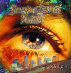

| Artist: | Scapeland Wish |
| Title: | Reason |
| Label: | self produced |
| Length(s): | 58 minutes |
| Year(s) of release: | 2000 |
| Month of review: | [06/2001] |
| 1) | Prelude To Reason | 1.08 |
| 3) | As A Child | 7.22 |
| 5) | Reason | 4.18 |
| 6) | The Tonight Show | 1.35 |
| 7) | Before The Absence | 0.34 |
| 8) | Absence Of God | 4.05 |
| 9) | The Heart Of The Andes | 6.07 |
| 10) | A Brave New World | 5.01 |
| 11) | Arms Around You | 3.13 |
| 13) | Silver Sleep | 3.25 |
| 14) | Take The Lead | 7.14 |
As A child is a longer track, the longest on the album in fact. A tranquil opening gives way to melodic guitar work with a strong bass underlying it all. The vocals are a bit hazy with quite a bit of harmony singing (or, actually, the vocals are more or less filling up each others holes). The vocals give me a bit of a Yes feel for some reason, but the music is infinitely more relaxed. Very moody. In the middle we have a more orchestral interlude, but the moodiness returns and the pace sets in a bit with a repetitive guitar run.
Next track Snow In Santa Fe sounds a bit like music on the Windham Hill label. All a bit too relaxed I think, although the title is well chosen: the recording sounds a bit like when it has snowed outside. The guitarwork at the end is rather sharp.
After a rather proggy, but still subdued opening, the opening is rather pacey with a lot of different vocals. Later the music becomes quite romantic and balladic with a vocal duet. The song is totally different here, actually there is little reason for calling it the same track. The piano playing is quite nice, but the vocals are a bit too sweet for me. At the end the opening vocal part returns. On the whole a bit of a jumble.
After the short and jazzy Tonightshow (with Jay Leno, guys?) we get a short interlude to Absence Of God. Here the guitar work has a Queen feel. Absence Of God itself opens with acoustic guitar and quite a bit of percussion. A bit of a tame intro though. The verses are not really interesting, but the chorus line is quite catchy. A rather funky track.
Laid back guitar work we find on Heart Of The Andes. Again, elegant and rather accessible melodic material, that breathes peacefulness. There is a religious/spiritual streak in this song. Well sung and some sharp edges at the end.
Funky bass opens Brave New World. The vocals are however in a hazy style, melodic as always with quite a bit of harmony vocals. A bit of a jumble again. Arms Around You is a romantic, somewhat plaintive track. To me, a bit too sweet again.
More proggy is ...(Chinese Spare Ribs) in which I like the jazz influences least. There are really some nice passages in this track, but unfortunately most is late nite jazz. Silver Sleep is a shortish lullabye with some nice mood creating cello, darkening up this light acoustic piece.
Final track is the longish Take The Lead. After a strong bombastic opening we get a vocal part in the style of Styx. This is quite a proggy track with plenty of variation: the rather active opening is replaced by percussive piano and low and slow bass and echoey guitars.